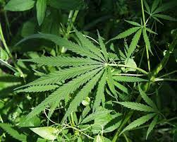
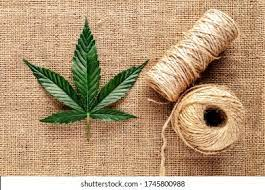

hemp, (Cannabis sativa), also called industrial hemp, plant of the family Cannabaceae cultivated for its bast fibre or its edible seeds. Hemp is sometimes confused with the cannabis plants that serve as sources of the drug marijuana and the drug preparation hashish. Although all three products—hemp, marijuana, and hashish—contain tetrahydrocannabinol (THC), a compound that produces psychoactive effects in humans, the variety of cannabis cultivated for hemp has only small amounts of THC relative to that grown for the production of marijuana or hashish.
Hemp originated in Central Asia. Hemp cultivation for fibre was recorded in China as early as 2800 BCE and was practiced in the Mediterranean countries of Europe early in the Christian era, spreading throughout the rest of Europe during the Middle Ages. It was planted in Chile in the 1500s and a century later in North America. industrial hemp industrial hemp Hemp is grown in temperate zones as an annual cultivated from seed and can reach a height of up to 5 metres (16 feet). Crops grow best in sandy loam with good drainage and require average monthly rainfall of at least 65 mm (2.5 inches) throughout the growing season. Crops cultivated for fibre are densely sowed and produce plants averaging 2–3 metres (6–10 feet) tall with almost no branching. Plants grown for oilseed are planted farther apart and are shorter and many-branched. In fibre production, maximum yield and quality are obtained by harvesting soon after the plants reach maturity, indicated by the full blossoms and freely shedding pollen of the male plants. Although sometimes pulled up by hand, plants are more often cut off about 2.5 cm (1 inch) above the ground. Fibres are obtained by subjecting the stalks to a series of operations—including retting, drying, and crushing—and a shaking process that completes separation from the woody portion, releasing the long, fairly straight fibre, or line. The fibre strands, usually longer than 1.8 metres (5.8 feet), are made of individual cylindrical cells with an irregular surface.
The fibre, longer and less flexible than flax, is usually yellowish, greenish, or a dark brown or gray and, because it is not easily bleached to sufficiently light shades, is rarely dyed. It is strong and durable and is used for cordage—e.g., twine, yarn, rope, cable, and string—and for artificial sponges and such coarse fabrics as sacking (burlap) and canvas. Some specially processed hemp has a whitish colour and attractive lustre and is used to make fabric similar to linen for clothing. Hemp textiles can be used to make shoes. Hemp fibre is used to make bioplastics that are recyclable and biodegradable, depending on the formulation. The novel “hempcrete,” a composite material made of hemp and a lime binder, can be used similarly to traditional concrete in non-load-bearing applications. Hemp can also be used as an alternative to wood pulp in some instances; it is frequently used in papermaking and is a sustainable alternative to fibreglass insulation in buildings.
A bast fibre, flax is one of the oldest textile fibres. Evidence of its use has been found in the prehistoric lake dwellings of Switzerland. Fine linen fabrics, indicating a high degree of skill, have been discovered in ancient Egyptian tombs. Phoenician traders apparently brought linen from the Mediterranean area to Gaul and Britain, and the Romans introduced linen manufacture throughout their empire. In the 17th century the German states and Russia were major sources of raw material, and the linen industry was established in the Netherlands, Ireland, England, and Scotland. In North America the expansion of the cotton industry reduced the importance of linen. Harvesting the fibre usually takes place after the lower portion of the stalk has turned yellow but before the fruit is fully mature. The fibre is obtained by subjecting the stalks to a series of operations, including retting (the use of moisture and microorganisms to dissolve the tissues surrounding the fibres), drying, crushing, and beating.
Hemp seeds are particularly rich in these healthy fats, including omega-3 and omega-6 fatty acids. Both of these fats are known for improving heart health by reducing cholesterol, blood pressure, and triglycerides. Adding hemp oil to your diet may reduce your risk of heart problems in the future.